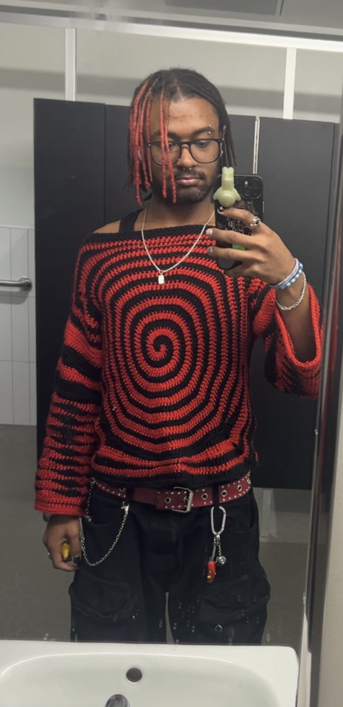
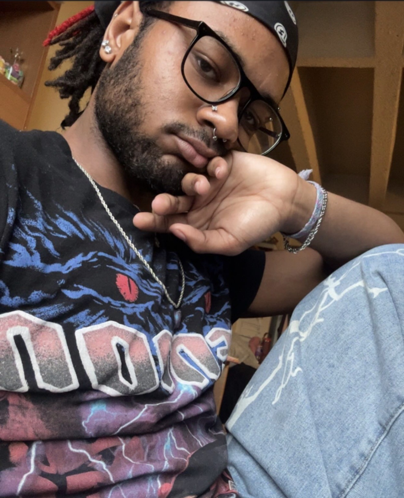

Made by hand, made with heart.
Welcome to Bitches Get Stitches. My name is Jamani and I create handmade crochet pieces designed to bring a little warmth, color, and personality into everyday life. Browse my work or contact me about a custom piece.

Handcrafted crochet creations
Plushies
Soft, fun amigurumi and handmade characters for gifts or keepsakes.
Bags & Accessories
Useful pieces with handmade texture, from totes to pouches and hats.
Wearables
Sweaters, cardigans, and statement pieces with bold, one-of-a-kind patterns.
Custom Orders
Have an idea in mind? Send me a message and we can talk about colors, size, and design.
From idea to stitched reality
Reach out
Tell me what you're picturing — the piece, colors, size, and any inspiration photos.
Talk it through
I'll follow up with questions or options so the piece fits exactly what you want.
Stitched & shipped
I get to work and let you know a timeline, then get your one-of-a-kind piece to you.

Hi, I'm Jamani.
Every piece here is designed and stitched by hand, one at a time. I started making crochet pieces because I love turning yarn into something people actually get to use and enjoy — a bag they carry, a plushie they keep, a sweater that gets compliments. If you don't see exactly what you want in the gallery, that's usually where the best custom pieces start.
Let's talk customFollow along on Instagram
New pieces, works-in-progress, and behind-the-scenes stitching.